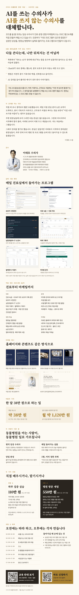
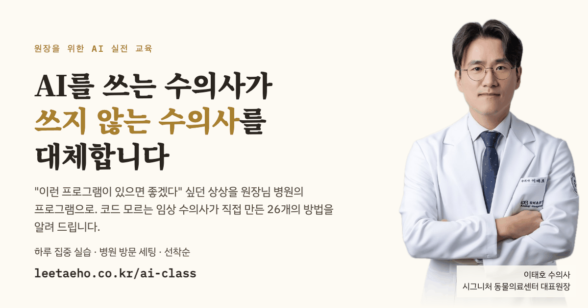

원장을 위한 AI 실전 교육
결과물 모음
링크, 홍보글, 포스터, PDF, 문서를 한곳에 모았습니다. 복사 버튼을 누르면 바로 붙여 넣으실 수 있습니다.
링크
모집 안내 페이지 (신청자에게 보낼 주소)https://leetaeho.co.kr/ai-class
신청서 바로 가기https://leetaeho.co.kr/ai-class/apply
신청 명단 (원장님 전용, 비밀번호 필요)https://leetaeho.co.kr/ai-class/admin
문의 메일 주소growingtiger+aiclass@gmail.com
게시판 홍보글
제목
사전문진부터 진료 차트, CT 소견서까지. 코딩 모르는 동물병원 원장이 직접 만든 프로그램 26개, 그대로 알려 드립니다
본문
원장님들, 안녕하세요. 시그니처 동물의료센터 대표원장 이태호입니다.
학회에서 "차트는 AI가 정리해 줘요"라는 말을 웃으며 넘겼지만 돌아오는 길에 마음에 걸리셨던 적, ChatGPT 유료 결제는 했는데 결국 보호자 문자 다듬는 데만 쓰고 계신 적 있으시지요. 저도 같은 자리에서 시작했습니다.
저는 코드를 쓸 줄 모르는 임상 수의사입니다. 그런데 지금은 진료, 운영, 경영, 마케팅에 쓰는 프로그램 26개를 직접 만들어 매일 쓰고 있습니다. 처음에는 모두 "이런 프로그램이 있으면 좋겠다"는 생각 하나였습니다.
· 보호자가 전날 적어 둔 사전문진을 진료 전에 미리 읽습니다
· 진료 녹음을 고르면 SOAP 차트와 보호자 카톡 문안이 나옵니다
· 판독 메모를 넣으면 심장초음파·CT 소견서가 정리됩니다
· 마취·투석 기록지는 휴대폰과 PC에서 함께 적고, 그래프는 자동으로 그려집니다
· 마약류 사용을 기록하면 NIMS 보고 대기함이 만들어져 보고를 빠뜨리지 않습니다
· 홈페이지 제작과 갱신, 인스타그램 카드, 검색 노출도 같은 방식으로 관리합니다
이걸 만들고 돌리는 데 드는 돈은 한 달 약 38만 원입니다. 같은 일을 개발자와 직원에게 맡겼다면 어느 정도인지 공식 임금 통계로 보수적으로 계산해 보니, 한 달 약 1,120만 원어치였습니다.
직접 써 보니 이걸 나만 쓰기엔 아깝다는 생각이 들었습니다. 주변 원장님들께 보여 드리면 다들 관심은 많으셨지만, 어디서부터 해야 할지 몰라 미뤄 두고 계셨습니다. 그래서 강의를 열기로 했습니다.
과정 1. 하루 집중 실습 | 110만 원 (1인, VAT 포함)
저희 병원에서 하루(10:00–18:00) 진행합니다. 기수당 5명입니다. 노트북을 가져오셔서, 원장님이 상상만 하던 우리 병원 프로그램을 당일 직접 만들어 휴대폰에 설치해 가십니다.
과정 2. 병원 방문 세팅 | 550만 원 (병원 1곳, VAT 포함)
제가 원장님 병원에 찾아가, 앞으로 원하시는 프로그램을 병원에서 직접 만들어 쓰실 수 있도록 AI 도구와 병원 규칙 파일, 배포와 저장소까지 환경을 세팅해 드립니다. 방문 전에 사전 질문지를 보고 병원 규칙 파일과 첫 프로그램 초안을 미리 만들어 갑니다. 그 자리에서 원하시는 프로그램을 함께 만들어 보며 방법을 알려 드리고, 직원분들께 사용법도 안내합니다. 그 병원 수의사·직원은 인원 제한 없이 누구나 참석하실 수 있습니다. 병원 전체를 한 번에 바꾸고 싶은 원장님께 권합니다. 서울·경기는 출장비가 포함이고, 그 밖의 지역은 교통·숙박 실비를 따로 받습니다. (Claude 유료 구독은 병원 부담입니다.)
두 과정 모두 선착순입니다. 과정 1은 5명이 모이면 다섯 분이 모두 되는 날짜를 함께 정합니다. 제가 진료를 계속 보고 있어 과정 1은 한 달에 한 번, 과정 2는 한 달에 한 병원만 진행합니다.
실제 프로그램 화면과 시간표는 안내 페이지에서 보실 수 있습니다. 프로그램 이름을 누르면 전과 후가 어떻게 달라졌는지 화면과 함께 나옵니다.
▶ 교육 안내 보기: https://leetaeho.co.kr/ai-class
▶ 바로 신청하기: https://leetaeho.co.kr/ai-class/apply
AI가 수의사를 대체하지는 않을 것입니다. 다만 AI를 쓰는 수의사가 쓰지 않는 수의사의 자리를 가져갈 것이라고 저는 생각합니다. 같은 고민을 하고 계신 원장님들께 도움이 되면 좋겠습니다.
짧은 카톡 홍보 문구
개인 카톡·단톡방용
원장님, 안녕하세요. 시그니처 동물의료센터 이태호입니다.
제가 진료하면서 직접 만들어 쓰고 있는 AI 프로그램들을 원장님들 병원에서도 쓰실 수 있게 돕는 교육을 열게 되었습니다. 코드를 몰라도 됩니다. 저도 코드를 쓸 줄 모릅니다.
과정 1은 저희 병원에서 하루 동안 직접 만들어 보는 실습(5명, 110만 원)이고, 과정 2는 제가 원장님 병원에 찾아가 원하는 프로그램을 직접 만들어 쓰실 수 있게 세팅해 드리는 과정(550만 원)입니다. 두 과정 모두 선착순이며, 진료를 계속 보고 있어 각각 한 달에 한 번만 진행합니다.
자세한 내용과 신청은 아래 링크에서 보실 수 있습니다.
https://leetaeho.co.kr/ai-class
포스터
게시판 포스터 (세로 이미지)이미지 저장


눌리는 링크가 들어간 PDFPDF 열기
PDF 안의 "교육 안내 보기", "바로 신청하기" 버튼을 누르면 실제 페이지가 열립니다. 카톡이나 메일로 파일을 보낼 때 쓰십시오.
썸네일과 버튼 이미지
썸네일 (링크 미리보기·게시판 목록용)저장




게시판 글쓰기에서 버튼 이미지를 올린 뒤 링크(사슬 모양)를 눌러, "교육 안내 보기"에는 https://leetaeho.co.kr/ai-class, "바로 신청하기"에는 https://leetaeho.co.kr/ai-class/apply 를 걸어 주십시오. 휴대폰에서는 이미지를 길게 눌러 저장하셔도 됩니다.
문서 (원장님만 열람)
claude.ai 문서는 원장님 계정으로 로그인해야 열립니다.